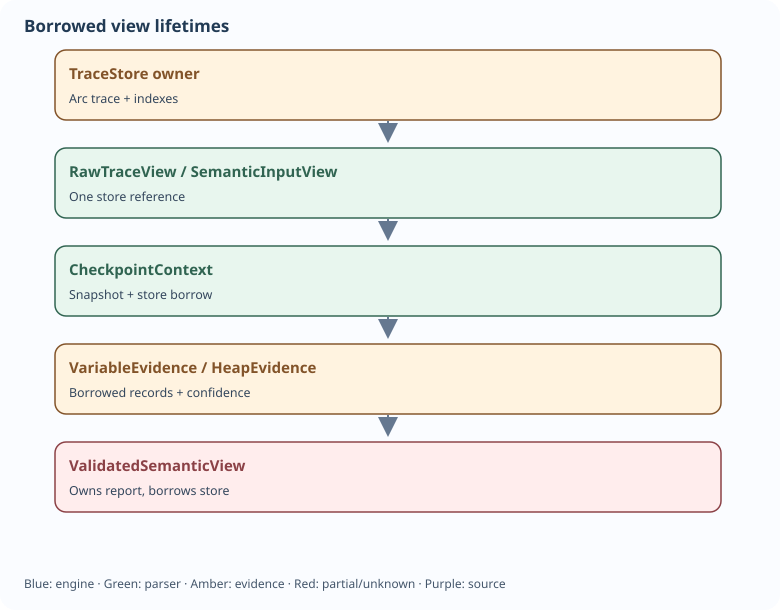
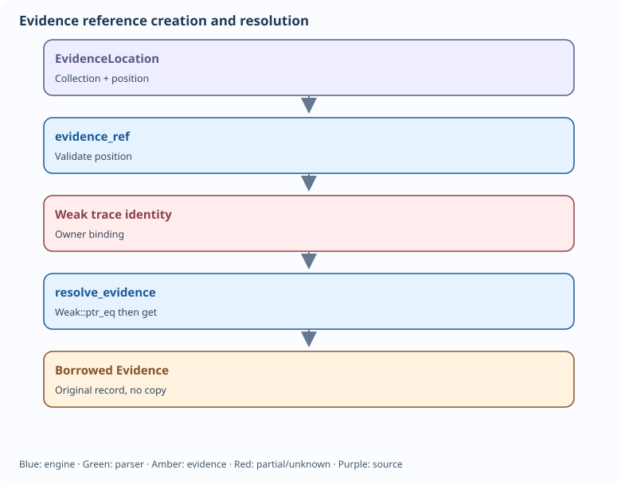

48 · Canonical ownership, borrowed views, and evidence references #
Key terms #
| Term | Plain meaning |
|---|---|
| Canonical owner | The one shared Arc<DebugSessionTrace> holding the records for this loaded trace. |
| Foreign trace | A second independent load, even from identical JSON, with a different owner. Its citations cannot be used against the first load. |
>
The big picture #
The parser's central design is simple: own the trace once, build positions once, and let every higher layer borrow the original records. A view is organization, not a second trace. An evidence reference is a checked position plus a weak owner identity, not a copy of an observation.
Canonical owner and cheap clones #
TraceStore has exactly three fields (src/trace_parser/mod.rs:191-214):
pub struct TraceStore {
trace: Arc<DebugSessionTrace>,
indexes: Arc<TraceIndexes>,
source: TraceSourceMetadata,
}assemble builds indexes from &trace, then moves the trace and index sets into separate Arcs (:216-230). TraceStore derives Clone: cloning shares both Arcs and copies only the small source metadata. shared() returns the canonical trace Arc (:354-357), not another store or an index clone.
This creates three ownership cases:
| Case | Owner | Query behavior |
|---|---|---|
let alias = store.clone() | Same Arc<DebugSessionTrace> | Same trace identity; all evidence references resolve |
| Load the same JSON twice | Two independent Arcs | Equal content, different identity; references are foreign |
Drop every TraceStore clone | Trace and indexes freed when last Arc drops | Old EvidenceRef cannot become accidentally valid through address reuse |
The weak identity in EvidenceRef is what prevents a numeric position from becoming portable. Two stores can both have snapshots[0]; that does not make their records the same trace.
Borrowed views #
Signatures: pub fn raw(&self) -> RawTraceView<'_> (src/trace_parser/views.rs:433-435) and pub fn semantic_input(&self) -> SemanticInputView<'_> (:438-440). Both views hold one &'a TraceStore; both are Clone, Copy and allocate no records.
RawTraceView dereferences to TraceStore, exposing existing TP-1/TP-2 methods without duplicate APIs (:44-86). SemanticInputView adds checkpoint traversal and evidence resolution (:91-166). It does not infer C objects, pointer origins or state changes.
Checkpoint contexts #
SemanticInputView::checkpoint_context(snapshot_index) resolves a snapshot and returns CheckpointContext with source_checkpoint_position = None (:114-122). source_checkpoint_context(position) first maps the explicit source-checkpoint position to a snapshot index (:128-133). snapshots() iterates all retained snapshots, including snapshots not in source_checkpoints (:137-144). source_checkpoints() iterates the explicit list and yields QueryResult items so a bad recorded reference is reported at its actual position rather than skipped (:149-154).
CheckpointContext (:175-181) borrows the store, a snapshot, and the snapshot index. It keeps source-checkpoint position separate. Its stop_id() converts the model's zero sentinel to None (:196-200); source_location() rejects empty file/line 0 (:204-207). events_at_checkpoint and heap_events_in_snapshot_interval delegate to verified TP-2 searches (:273-290). snapshot_evidence, variable_evidence, global_evidence, caller evidence and heap-block evidence create trace-scoped references (:292-341).
The distinction matters: a context reached through source_checkpoints has an explicit checkpoint position, while a context reached directly from snapshots() does not. Neither invents a checkpoint entry.
EvidenceRef and EvidenceLocation #
EvidenceLocation enumerates canonical collection positions and nested positions (src/trace_parser/evidence.rs:21-66): snapshot, instruction event, disassembly, heap event/state, allocation lifetime, gap, frame, variable, caller frame/variable, global, heap block, event memory, compiler/Valgrind/internal diagnostic, and report markers. A caller-frame frame is a vector position, not a GDB level or activation ID.
EvidenceRef stores a Weak<DebugSessionTrace> and an EvidenceLocation (:68-75). It never owns the trace or a record. evidence_ref first calls resolve_location to reject invalid positions, then binds the location to this store's weak trace identity (src/trace_parser/evidence.rs:129-135; src/trace_parser/mod.rs:1026-1039).
resolve_evidence checks Weak::ptr_eq before resolving the location (src/trace_parser/evidence.rs:140-145). This ordering is important: a reference from an independently loaded identical JSON document returns ForeignTrace, not a plausible-looking snapshot. Clones of the same store share the same Arc and resolve normally.
resolve_location performs direct vector lookups for every supported category and returns Evidence<'_> borrowing the original record (:147-265). Optional reports return Unavailable; invalid indices return InvalidReference. Evidence has no owned payload, so raw bytes, addresses and statuses remain exactly as recorded.
Valid and invalid example #
let store = TraceStore::open("trace.json", TraceLoadOptions::default())?;
let context = store.semantic_input().checkpoint_context(0)?;
let reference = context.variable_evidence(0)?;
let evidence = store.resolve_evidence(&reference)?;
let other = TraceStore::open("trace.json", TraceLoadOptions::default())?;
assert!(matches!(
other.resolve_evidence(&reference),
Err(QueryError::ForeignTrace)
));The example uses the real API names. It is illustrative, not a checked-in test transcript. A reference is not serialized as a cross-session identity; its location alone is insufficient without the matching owner.
Raw versus semantic input #
RawTraceView is for exact recorded access: ranges, instruction events, source/disassembly, heap events and diagnostics. SemanticInputView composes those records into checkpoint contexts without making semantic claims. ValidatedSemanticView is the next layer: it owns a ValidationReport and borrows the store (src/trace_parser/semantic.rs:28-34). Creating it runs one deep-validation pass; queries do not rerun it.
Performance and tests #
Creating either view copies one reference; creating a checkpoint context is O(1) and allocates no record buffer. Evidence creation validates a position and allocates an EvidenceRef with a weak pointer. Resolution is direct vector indexing. tests/trace_parser_views.rs exercises raw/semantic context separation, foreign-reference rejection, caller evidence, source declarations and process-scope annotations; tests/trace_parser.rs covers positional/range errors.
Diagram notes #
Canonical ownership #

Borrowed lifetime relationships #


Evidence reference creation and resolution #

